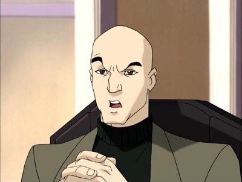
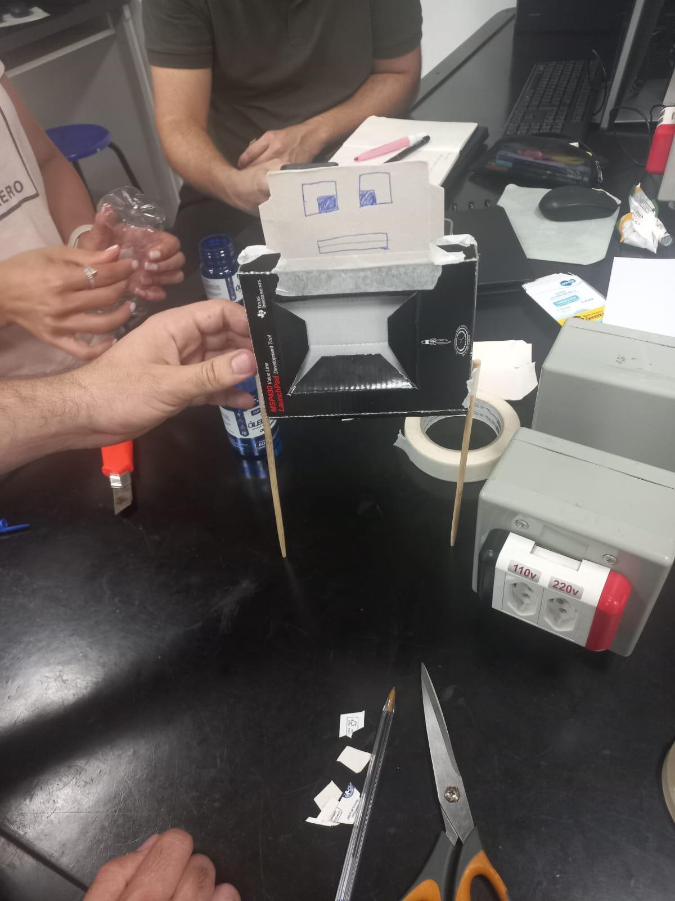
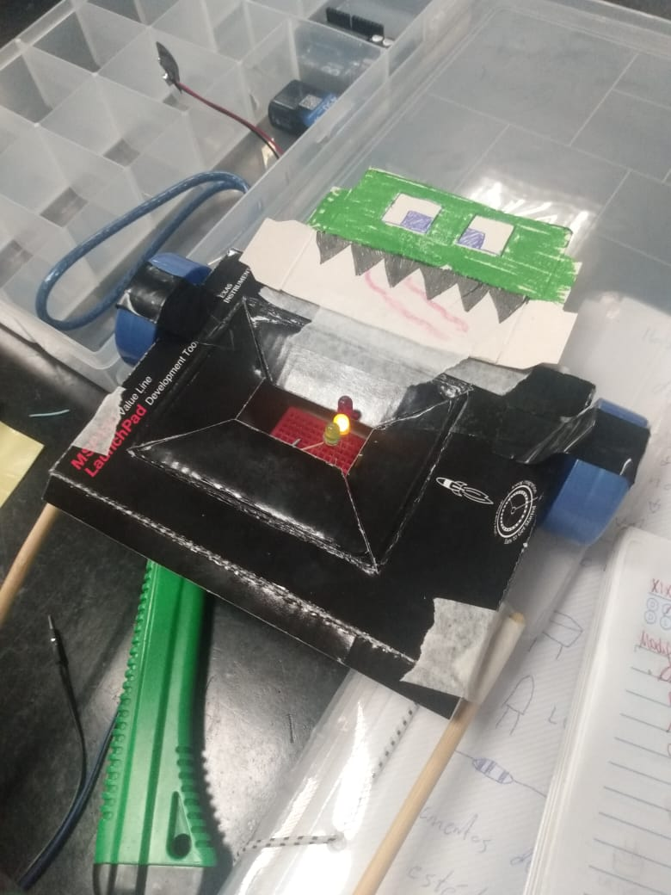
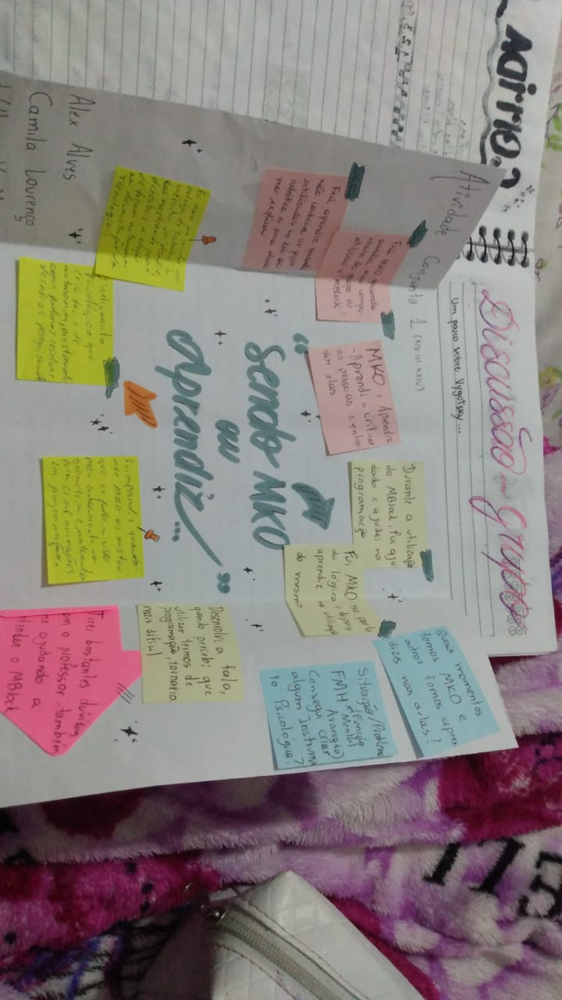

Robótica Pedagógica para Projetos Interdisciplinares
Diário de bordo digital
Apresentação dos integrantes
Somos Interdisciplinares?
Integrantes:
- Alex Alves Carvalho da Costa
- Camila da Silva
No dia 05 de fevereiro, o professor nos propôs uma discussão. Somos Interdisciplinares?
A dúvida em questão se refere ao grupo que formamos para desenvolvermos nossas atividades
da matéria, grupo este no qual existia uma variação nos objetivos de cada um dentro da universidade.
Descobrimos que nosso grupo era formado por pessoas que queriam fazer Ciência da Computação,
Gestão, Licenciatura e Engenharia Ambiental.
A partir disso, conseguimos definir que sim, somos Interdisciplinares, e que esta interdisciplinaridade
seria extremamente benéfica para nosso grupo, pois possuímos uma maior abrangência de conhecimentos
quando unidos, enriquecendo nossas ideias e discussões. Apesar disso, por cada um estar mais
voltado para uma área, também não conseguimos discutir profundamente sobre algo, haja vista que apenas um
tem mais conhecimento imediato sobre tal assunto, podendo nos levar à algum engano.
Mascote/Ícone
Integrantes:
- Alex Alves Carvalho da Costa
- Camila da Silva
- Igor Carvalho de Oliveira
Cada integrante do grupo adotou um icone como sua representação dentro do diario
de bordo. A seguir estão estes icones e a descrição feita pelo integrante sobre o que esta representa
e se relaciona na matéria.
Aqui está o texto que você quer exibir ao lado da imagem.

Alex Alves: Meu icone é o Robo Lego Mindstorm, sendo uma representação do uso da robótica em
ambientes educacionais,
o qual estimula a prática, criatividade, colaboração, habilidades técnicas e outras características
do profissional do futuro.

Igor: Eu escolhi o prof. Charles Xavier (X-Men) pois é um personagem que valoriza
a importância da educação até mesmo para jovens mutantes
Robô sucata
Integrantes:
- Alex Alves Carvalho da Costa
- Camila da Silva
- Igor Oliveira

Nesta aula tivemos o objetivo de montarmos um "robô" com materiais reciclaveis. Este robô deveria ajudar em
tarefas multidisciplinares.
Nosso robô foi nomeado "Trubbish", um pokemon com a missão de coletar o lixo dos rios e contribuir com o
meio
ambiente do nosso planeta. Seu nome é inspirado em um Pokemon foi criado a partir do lixo, mas com a
inspiração
de mostrar que mesmo que tenha vindo do lixo, este ainda possuí um grande potencial de fazer a diferença.
A idéia de usar o nome de Pokemon foi relacionada também com a aproximação de crianças, para que possamos
envolver mais elas na narrativa por assimilação de algo que muitas gostam.
Carreira
Integrantes:
- Alex Alves Carvalho da Costa
- Camila da Silva
- Igor Oliveira
Nesta atividade discutimos sobre nossas carreiras, à fim de praticar a empatia e entender sobre
o que as outras pessoas estão passando ao analisar a entrevista que fizemos uns aos outros.
Atividade Carreira da Camila

Atividade Carreira do Alex

História
Integrantes:
- Alex Alves Carvalho da Costa
- Camila da Silva
- Igor Oliveira
No dia 19/02/2024, fizemos nossa primeira demonstração do jogo. Esta demonstração foi simples e sem o Robô
funcionando realmente, sendo o importante termos a narrativa e mostrarmos como o jogo funcionaria com
os componentes disponibilizados nesta aula, que foram a Led, Resistor, Buzzer e protoboard. No momento ainda
não
tinhamos acesso ao Arduino.

Robo Trubbish:
Trubbish, nosso pokemon coletor de lixos, precisa de ajuda para tornar o rio de frente da UFABC mais limpo.
Para isso, devemos auxiliar nosso amigo em quais lixos foram coletados e como separa-los de forma correta.
Na separação do lixo, temos algumas cores que indicam o tipo de lixo:
- Amarelo: Metais
- Vermelho: Plástico
- Verde: Vidro
Ao detectarmos quais lixos foram coletados por Trubbish, devemos informa-lo na ordem correta
para que o descarte seja feito da forma correta, ajudando na reciclagem e sustentabilidade da nossa
UFABC.
Habilidades:
- Português: Narrativa e desenvolvimento da sequência
- Matemática: Uso do raciocinio e da memória
- Ciências: Triagem do lixo e conscientização sobre o impacto no meio ambiente.
Luzes e Sons
Integrantes:
- William Yutaka
- Camila da Silva
- Igor Oliveira
O objetivo final dessa aula foi terminar o projeto do robô sucata. Assim, seria o
momento de finalizar nosso robô Trubbish tornando-o jogável. Retomando a história,
Trubbish é um pokémon coletor de lixos e agora ele precisa de ajuda para limpar o
lixo em frente a UFABC. No entanto, nosso amigo precisa de ajuda, uma vez que possui um
grande problema: sua memória não é muito boa. Aqui, você jogador entra assumindo um papel
muito importante: o de memorizar a ordem em que as luzes acendem e quando a sequência for
finalizada clicar nos botões na ordem da sequência, realizando a triagem correta. Isto é,
amarelo (metais), vermelho(plástico) e verde (vidros). Porém, é preciso ter cuidado, haja
vista que caso insira uma sequência incorreta um alarme é acionado e todo lixo recolhido
será despejado novamente no rio da UFABC
Corrida Maluca
Integrantes:
- Alex Alves Carvalho da Costa
- Camila da Silva
- Igor Carvalho de Oliveira
- William Yutaka
O objetivo deste projeto será fazer um carro capaz de participar da corrida maluca. Nosso carro
possui algumas características que serão descritas abaixo:
País

Nome: Pé de vento
Piloto: Saci Pererê
Cenário: Floresta
Movimento do carro: O carro andará girando, em inspiração ao Saci, que ao rodar produz ventos fortes e ganha uma enorme força
Discussão sobre MKO
Integrantes:
- Alex Alves Carvalho da Costa
- Camila da Silva
- William Yutaka
Na aula, nos foi apresentado o termo MKO (More Knowledgeable Other, ou em tradução livre, Alguém com mais
conhecimento)
e a teoria de Vygotsky. Diante de tudo que aprendemos,
fizemos uma discussão em grupo sobre a importância de MKO's na nossa vida, seja alguma experiência
na qual fomos MKO de alguém ou alguma experiência na qual tivemos um MKO que nos ajudou em algo.
Observações dos integrantes:
Igor: Eu tive algumas dificuldades iniciais para ligar e carregar o código no arduino. Te
